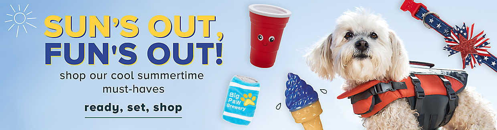

Founded in 1986, PetSmart, Inc. is the largest specialty pet retailer of services and solutions for the lifetime needs of pets. At PetSmart, we love pets, and we believe pets make us better people. Every day with every connection, PetSmart’s passionate associates help bring pet parents closer to their pets so they can live more fulfilled lives. This vision impacts everything we do for our customers, the way we support our associates, and how we give back to our communities.
We employ approximately 55,000 associates and operate more than 1,600 pet stores in the United States, Canada and Puerto Rico as well as more than 200 in-store PetSmart PetsHotel dog and cat boarding facilities. PetSmart provides a broad range of competitively priced pet food and products and offers unique pet services including training, pet grooming, boarding, PetSmart Doggie Day Camp and in-store pet adoptions.
Expert veterinarian care is available in many of our stores, where Banfield Pet Hospital®, operates full-service pet hospitals. These in-store pet hospitals operate independently of PetSmart and employ veterinarians who provide a full range of health care and emergency services.
PetSmart, together with non-profits PetSmart Charities and PetSmart Charities of Canada, invite more than 3,500 animal welfare organizations to bring adoptable pets into stores so they have the best chance possible of finding a forever home. Through this in-store adoption program and other signature events, PetSmart has facilitated more than 8 million adoptions – more than any other brick-and-mortar organization.
In May 2017, PetSmart acquired Chewy.com, a leading online retailer of pet food and products in the U.S., which operates as an independent subsidiary.
DHP